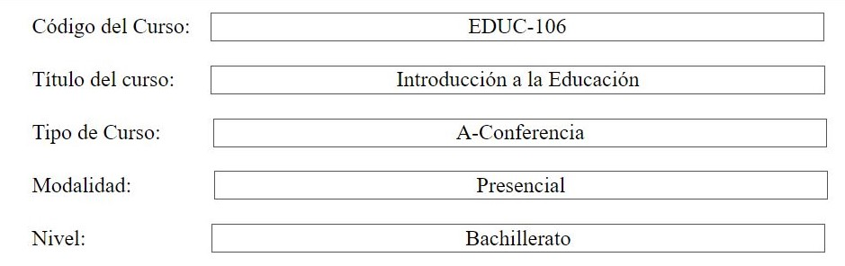
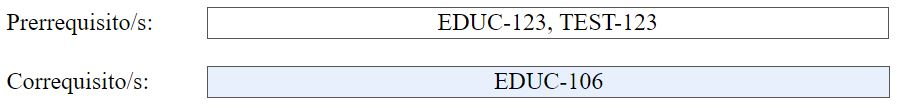
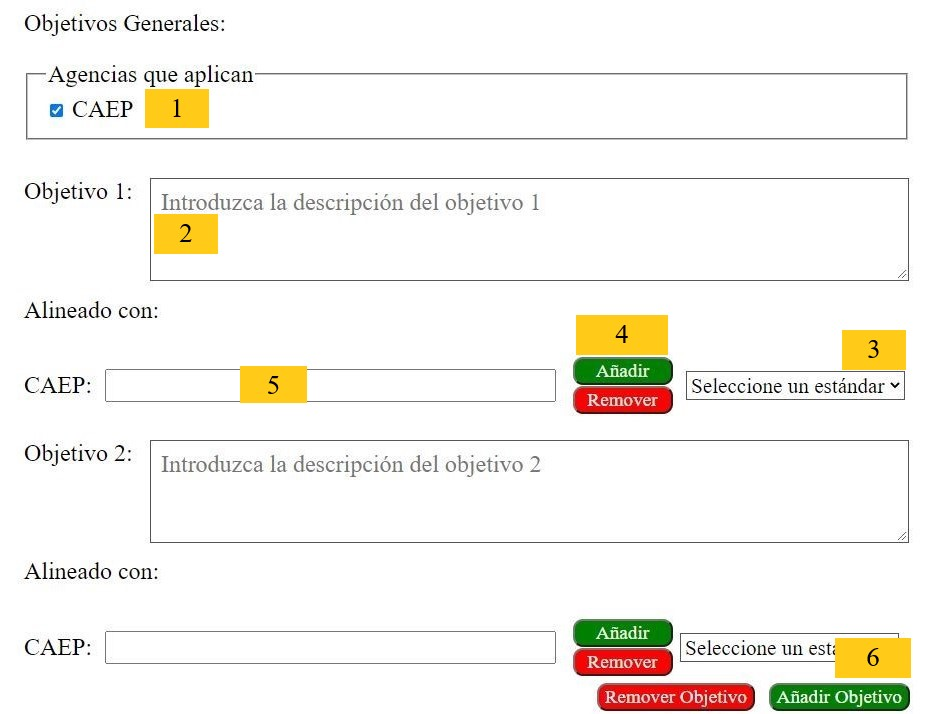
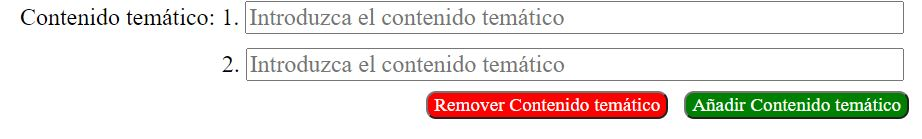
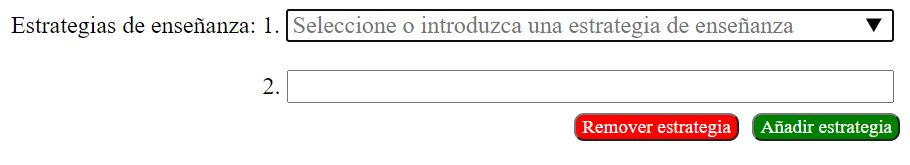
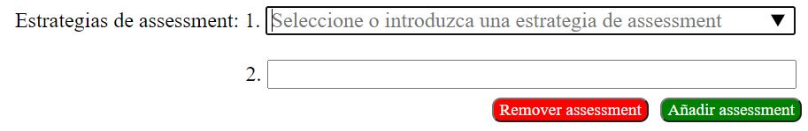
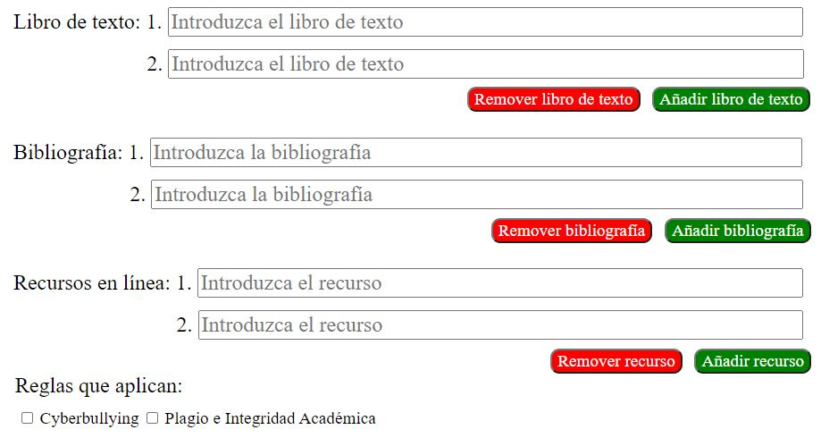

En la foto mostrada a continuación se puede ver cinco (5) datos sobre el prontuario. Dichos datos no pueden ser alterados, de haber la necesidad de cambiarlos debe comunicarse con la persona que tenga acceso a la base de datos del sistema para que dicha persona pueda realizar los cambios correspondientes.
Segundo, relacionado con los prerrequisitos, y correquisitos, de haber más de uno (1) se deben separar por comas (,) y si no tiene ningún prerrequisito o correquisito el encasillado debe dejarse en blanco. A continuación, se muestra un ejemplo con dos prerrequisitos y un correquisito. Cabe destacar que si uno o más de dichos códigos no se encuentran en la base de datos se generará un error que será notificado por el sistema y se le dará la oportunidad de arreglar el o los códigos de curso.
La duración del curso puede escribirse de la forma deseada, dicho encasillado acepta números, letras y caracteres especiales. Para el dato relacionado con los créditos del curso es el mismo caso expuesto anteriormente. Por otro lado, cabe destacar que la descripción del curso y la justificación acepta uno o varios párrafos.
Con respecto a los objetivos, primero, como se indica en la foto, se debe marcar las agencias que aplican. Por el momento, el sistema solo cuenta con la agencia denominada CAEP. El segundo paso es llenar la información relacionada con el primer objetivo. Una vez se llena la información del objetivo, se procede a alinear el objetivo con los estándares seleccionados, por el momento, CAEP. En la región enumerada como tres (3) se selecciona el estándar a añadir, se van seleccionando uno a la vez. Para añadirlo se debe presionar el botón de "Añadir", el cual como se muestra en la foto se encuentra en la región identificada como cuatro (4). En dicha región también se encuentra el botón "Remover" el cual, como su nombre indica, se utiliza para remover el estándar seleccionado en la caja tres (3) del encasillado enumerado como cinco (5). El proceso para añadir los estándares al encasillado cinco (5) se puede repetir hasta culminar de añadir todos los estándares necesarios.
Por otro lado, para los objetivos dos (2) en adelante, primero se deben añadir todos los encasillados necesarios utilizando el botón de "Añadir Objetivo", mostrado en la región enumerada como seis (6). Esto se debe a que el contenido de los encasillados se borrará al añadir más objetivos. Por ejemplo, si el prontuario va a contener cinco (5) objetivos, una vez se introduzca la información del primer objetivo, se debe presionar el botón de "Añadir Objetivo" cuatro (4) veces para que así aparezcan los encasillados de los objetivos dos (2) al cinco (5). Si se pasa de cantidad de objetivos, puede presionar el botón de "Remover Objetivo" y el mismo le permitirá remover los últimos encasillados dedicados al ultimo objetivo. Por último, para los objetivos del dos (2) en adelante se repiten los pasos indicados para el primer objetivo para llenar su información correspondiente.
Antes de llenar la información relacionada con el contenido temático se debe presionar el botón de "Añadir Contenido temático", como se muestra en la foto a continuación. Esto se debe a que, si se llena la información del segundo contenido temático y luego se presiona el botón de añadir para agregar el tercer contenido temático, la información del segundo contenido temático se perderá. Por esta razón se debe añadir todos los encasillados requeridos antes de empezar a llenar la información. Si se diera el caso de que añadió encasillados de mós, puede presionar el botón de "Remover Contenido temático", el cual va a remover el último encasillado.
Para la información de las estrategias de enseñanza, con respecto a la adición de encasillados, es el mismo caso presentado previamente. Por su parte, difiere en que se pueden mostrar opciones a escoger al presionar el triángulo que se muestra en la foto a continuación. Se mostrarán opciones si la base de datos contiene información al respecto. Cuando se escribe una opción que no esta siendo mostrada, dicha opción o información será añadida a la base de datos para uso futuro.
Las estrategias de assessment se trabajan del mismo modo que las estrategias de enseñanza y las opciones a escoger se comportan del mismo modo.
Por último, la información relacionada al libro de texto, la bibliografía, y los recursos en línea se trabaja de la misma manera que el contenido temático. Con respecto a las reglas, se pueden marcar todas las reglas que apliquen al curso, pero al menos se debe seleccionar una.
